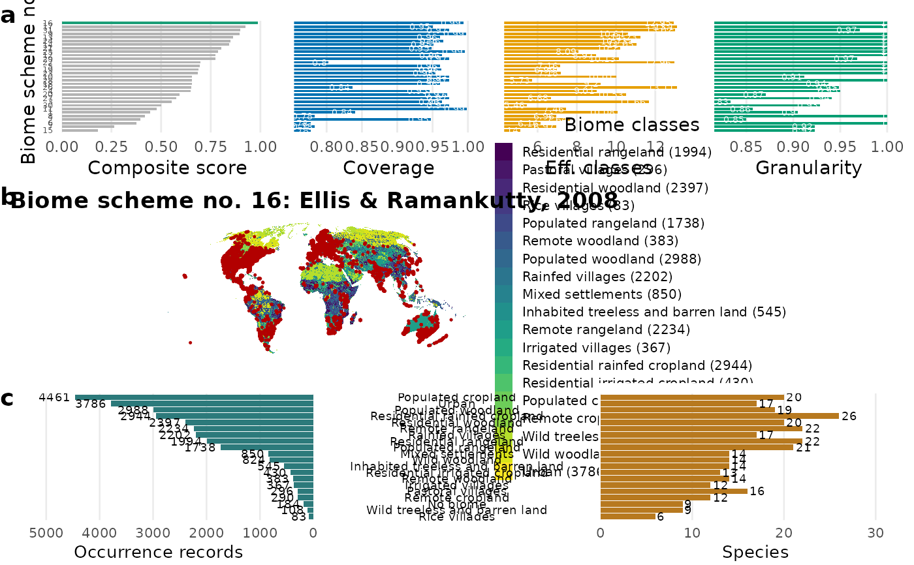
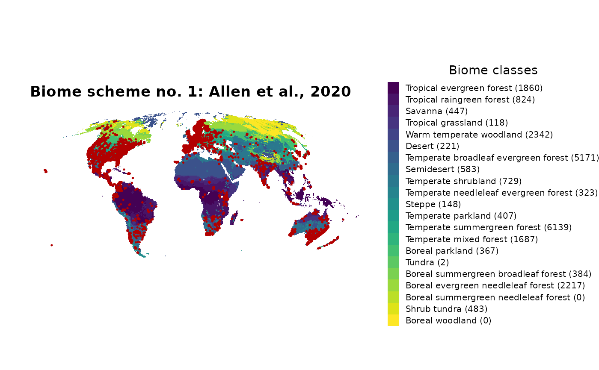
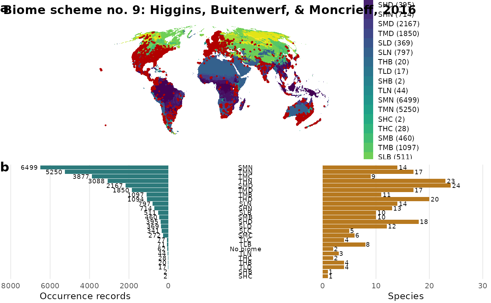

Visualise the biomes workflow (ranking, map and biome-class composition)
Source:R/biomes_visualise.R
biomes_visualise.RdProduces the publication figure of the biomes workflow for a set of occurrence records. Up to three panels are drawn and combined:
Usage
biomes_visualise(
x,
scheme = NULL,
scheme_type = "all",
biome = NULL,
lon = "decimalLongitude",
lat = "decimalLatitude",
panels = c("rank", "map", "barplot"),
legend_counts = TRUE,
legend = TRUE,
point_color = "#B20000",
point_size = 0.25,
combine = TRUE,
verbose = FALSE
)Arguments
- x
A data frame with longitude/latitude columns, an
sfspatial object, or aterra::SpatVectorof point geometries.- scheme
Integer in
1:31(biome scheme number). IfNULL(default), the best-fitting scheme is chosen bybiomes_rank()(withinscheme_type).- scheme_type
Character. Methodological group to rank within when
schemeisNULL; passed tobiomes_rank(). Default"all".- biome
Optional single-layer
terra::SpatRaster. If supplied it is mapped directly and only themappanel is available (no ranking).- lon, lat
Column names of longitude / latitude in
x(data frame only). Defaults"decimalLongitude"/"decimalLatitude".- panels
Character vector, any subset of
c("rank", "map", "barplot")(default all three). Panels are drawn and lettered in this order.- legend_counts
Logical. If
TRUE(default), append the number of records per biome class to the map legend labels.- legend
Logical. If
TRUE(default), draw the biome-class colour legend on the map panel.- point_color
Colour of the occurrence points. Default
"#B20000".- point_size
Numeric size of the occurrence points. Default
0.25.- combine
Logical. When more than one panel is drawn:
TRUE(default) combines them into one lettered figure (a, b, c);FALSEreturns a named list of the individual panels (no letters). Ignored for a single panel (always returned as a bareggplot).- verbose
Logical. Passed to
biomes_rank(). DefaultFALSE.
Value
For a single panel, a ggplot object. For several panels: a
combined cowplot object when combine = TRUE (default), or a named
list of ggplot objects (rank, map, barplot) when
combine = FALSE. Print to display or save with ggplot2::ggsave().
Details
rank: the data-driven ranking of the biome schemes (
biomes_rank()): the composite score per scheme (best highlighted) next to the raw criterion values it averages (coverage, effective number of classes, granularity, ...).map: the occurrence records (points) mapped over the chosen biome scheme, with the number of records per biome class optionally appended to the legend labels.
barplot: the number of occurrence records (left) and species (right) per biome class, with the biome-class names in the centre.
Which panels are drawn is controlled by panels; the panel letters
(a, b, c) are assigned in drawing order, so selecting only rank and
barplot labels them (a) and (b).
Examples
# \donttest{
data("biomes_example")
# full figure (rank + map + barplot), best scheme chosen automatically
biomes_visualise(biomes_example)
#> <SpatRaster> resampled to 5e+05 cells.

# only the map, for a fixed scheme
biomes_visualise(biomes_example, scheme = 1, panels = "map")
#> <SpatRaster> resampled to 5e+05 cells.

# map + barplot for the best vegetation scheme
biomes_visualise(biomes_example, scheme_type = "vegetation",
panels = c("map", "barplot"))
#> <SpatRaster> resampled to 5e+05 cells.

# }